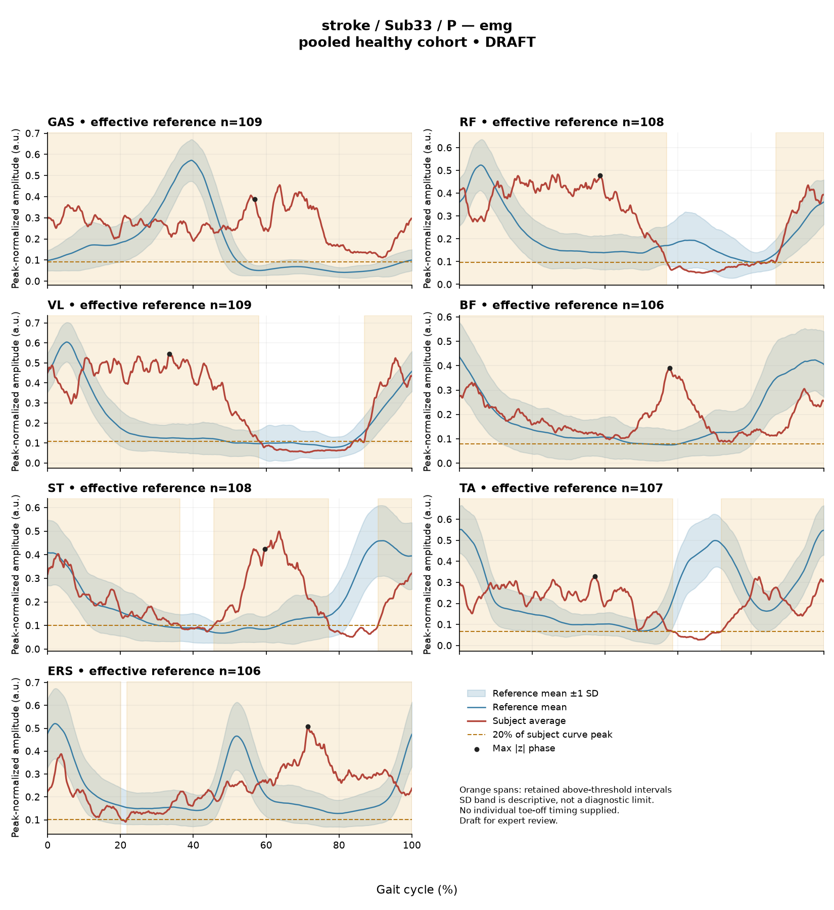

rater2 / Report 17 of 105 / Review spreadsheet row 18
RDEBA7F747795D5A2
Case: stroke_Sub33_P
Read this report independently. Record judgments in the workbook. Browser pages do not save ratings.
Report: exact saved text
# Gait Report Interpretation — Sub33_P **Interpretation version:** limited-evidence-v3.1-candidate **Scope:** Research interpretation of a supplied quantitative summary. This is not a diagnosis, not a clinical assessment of walking ability, and not a basis for treatment selection. --- ## 1. Objective Findings **Participant and side.** Sub33_P is a member of the stroke cohort. All data below come from the **paretic** side. The analysis cycle is defined from initial contact of the paretic limb (0%) to the next initial contact of the same limb (100%); these are two successive occurrences of the same event, not a single instant. No intermediate gait event (toe-off, or any phase boundary) is supplied for this participant, so all timing below is reported as a percentage of the analysis cycle only. **Spatiotemporal values as supplied.** - Gait speed 0.22 m/s, which falls in the "household ambulator (<0.4 m/s)" speed band. This label denotes a speed band only; it does not measure walking independence, safety, or real-world mobility, and none of those were assessed here. - Cadence 62.7 steps/min. - Step length symmetry index +8.6%, using the **successive-footfall** definition. By the stated sign convention, a positive value indicates the paretic step is the *longer* of the two. Note that the alternative (instantaneous) step-length definition yields a different value in some subjects, so this figure is definition-dependent and should not be compared with symmetry values computed under the other convention. - Composite kinematic deviation score (GPS-like) 10.56. **Reference used.** Kinematic deviations are computed against 138 pooled healthy subjects (1001 phase points, source: main_cohort_excel). This reference pools both body sides and all ages and is **not** age- or speed-matched to this participant. **A central comparability limit for this report.** This participant's gait speed of 0.22 m/s lies well below the healthy reference cohort's self-selected speed range of 0.80–1.79 m/s. **No speed-matched healthy reference exists in this dataset for this subject.** Every reference comparison below therefore conflates the effects of walking very slowly with any stroke-related changes in motor control, and these two contributions cannot be separated from these data. Deviations should be read strictly as "differs from this pooled reference," not as a measured stroke effect, a severity grade, or a diagnosis. Group membership in the stroke cohort is documented, but it is not established by these numbers and does not itself explain any individual value here. **Channels supplied and not supplied.** Seven EMG envelope channels (GAS, RF, VL, BF, ST, TA, ERS) and four sagittal-plane kinematic channels (ankle, knee, hip, pelvis) are supplied. Coronal and transverse plane kinematics are not part of this input. Individual toe-off timing, muscle-specific matched normal timing references, stride-by-stride data, raw-signal quality checks, and expert plots are outside this input; their absence here does not mean they are absent from the source release. Age, sex, time post-stroke, clinical stroke scores and non-paretic-side data are not provided in this summary. --- ## 2. EMG Envelope and Threshold Findings **How these numbers must be read.** Each row describes a single **ensemble-averaged envelope** per muscle. Amplitudes are normalized to a shared maximum across available strides for that participant, side, and muscle (in the checked stroke release the denominator is participant-, side-, and muscle-specific and is not shared across sides), and the released mean curves are used without further normalization. Consequently: amplitudes are **relative envelope values only** — they are not neural drive, force, or strength, and muscles cannot be ranked as stronger or weaker from them. An averaged curve also cannot show stride-to-stride variability, so nothing below describes consistency across strides. "Above-threshold interval" means the region where the averaged envelope exceeds **20% of that same curve's own peak**, with a minimum retained length of 3% of the cycle. These are properties of the averaged envelope under that rule — not physiological onsets, offsets, contraction durations, or evidence of inactivity outside the intervals. An interval written with a start greater than its end wraps the 100%→0% boundary, meaning the mean envelope remains above its own threshold across the cycle-defining initial-contact boundary. Coverage percentages likewise describe the mean curve and should not be assumed to hold in every individual stride. **Per-muscle findings (percent of analysis cycle):** | Muscle | Retained interval(s) | Coverage | Peak norm. amp. | Max abs. z (location) | |---|---|---|---|---| | GAS | 0%–100% | 100% | 0.46 | 13.7 above ref., at 57% | | RF | 87%–57% (wraps) | 73% | 0.48 | 4.5 above ref., at 39% | | VL | 87%–58% (wraps) | 73% | 0.54 | 6.1 above ref., at 33% | | BF | 0%–100% | 100% | 0.39 | 5.1 above ref., at 58% | | ST | 46%–77%; 91%–36% (wraps) | 77% | 0.50 | 6.3 above ref., at 60% | | TA | 72%–58% (wraps) | 87% | 0.33 | 4.6 above ref., at 37% | | ERS | 22%–20% (wraps) | 98% | 0.51 | 4.8 above ref., at 72% | **Summary of the envelope pattern.** All seven averaged envelopes show boundary continuity — each remains above its own 20%-of-peak threshold across the initial-contact boundary. Retained coverage is high throughout: GAS and BF are reported at 100% of the cycle, ERS at 98%, TA at 87%, ST at 77%, and RF and VL at 73% each. ST is the only channel with two separate retained intervals (46%–77% and a wrapping 91%–36%), implying at least one below-threshold gap in that mean curve between those retained regions. For GAS and BF, the reported 100% coverage is consistent with no below-threshold segment in the mean envelope; because coverage figures here are rounded, this should be read as what the reported value states rather than as a verified continuous supra-threshold curve at full precision. For the remaining channels, coverage below 100% indicates below-threshold regions of the mean curve, but the exact location and extent of those regions beyond the stated interval endpoints is not resolvable from this summary. Because no toe-off or matched muscle-specific timing reference is supplied, none of these intervals can be assigned to stance or swing, to loading response, mid-stance or pre-swing, or to a conventional 60% split. Anatomical actions may be named (e.g., GAS as an ankle plantarflexor, TA as a dorsiflexor, RF/VL as knee extensors, BF/ST as knee flexors and hip extensors, ERS as an erector spinae channel), but no interval here can be mapped to a functional role such as clearance, push-off or weight acceptance. Likewise, no timing in this report can be called normal, early, delayed or prolonged — the evidence required for that judgement is not supplied. **Max |z| values.** Each max |z| is an **extreme-value statistic**: the largest standardized difference from the pooled reference across all 1001 phase points, not a single-observation z-score. The conventional 2-SD rule does not apply — in this dataset all 109 healthy controls exceed |z| = 2 on at least one muscle, and per-muscle healthy 95th percentiles for this statistic run from 3.65 (ERS) to 4.61 (TA), higher still under leave-one-out. Against those per-muscle reference values: GAS (13.7) is far above the ERS-to-TA band of healthy 95th percentiles and is by a wide margin the largest standardized difference in this subject; VL (6.1), ST (6.3), BF (5.1) and ERS (4.8) also exceed the corresponding healthy 95th-percentile range; TA (4.6) sits essentially at its own muscle's 95th percentile of 4.61; RF (4.5) is within the range spanned by the per-muscle percentiles. "Above reference" in each row means the curve lies above the **phase-specific reference mean** at that phase point — not above a healthy percentile limit. Critically, the location of each max |z| (e.g., 57% for GAS, 33% for VL) marks where the standardized difference from the reference is largest. It is **not** necessarily where that muscle's envelope peaks, and it does not identify a gait event or phase. And because no speed-matched reference exists, exceeding the healthy percentile band here cannot be attributed to stroke pathology as opposed to very slow walking. **Co-contraction indices.** CCI is the Falconer–Winter index over the **full continuous envelopes** across the whole cycle (2 × common area / summed areas). It is a whole-cycle overlap index of normalized envelopes: it is not time spent simultaneously active, not muscular force, and not a phase-specific result. It can be non-zero even when detected burst intervals do not overlap, because sub-threshold envelope area contributes. - **TA vs GAS: 0.78.** This lies above the healthy 97.5th percentile of 0.59 for this pair (healthy median 0.39, interval 0.24–0.59). - **RF vs BF: 0.65.** This lies inside the healthy interval of 0.48–0.83, slightly below the healthy median of 0.68. Being outside the interval (TA–GAS) does not establish pathological co-activation, spasticity, stiffness, or impaired motor control; being inside it (RF–BF) does not establish physiologically normal co-activation or normal muscle function. Both values depend on the normalization and envelope pipeline used here and must not be compared with CCI values or thresholds from other studies or algorithms. The same speed-matching limitation applies: slow walking alone can shift envelope overlap. --- ## 3. Kinematic and Reference Comparisons All kinematic values are **sagittal plane only**; no coronal or transverse data are included, so nothing here speaks to frontal- or transverse-plane motion. | Channel | Sagittal ROM | Gait Variable Score | |---|---|---| | Ankle | 14.9° | 6.91 | | Knee | 26.6° | 14.96 | | Hip | 23.5° | 11.51 | | Pelvis | 4.1° | 6.48 | **Composite (GPS-like) score: 10.56.** This is the RMS of the four sagittal Gait Variable Scores above — it is *not* the validated 9-variable GPS and should not be reported as such. Against the supplied composite reference (median 5.1, 95th percentile 10.7), 10.56 is roughly twice the median and sits just below the 95th percentile. Because that value is close to the 10.7 boundary and is displayed at rounded precision, it should be described as near that boundary rather than assigned to either side of it with confidence. Among the individual channels, the knee GVS (14.96) is the largest, followed by hip (11.51), ankle (6.91) and pelvis (6.48). GVS and the composite are **summary magnitudes of difference** from the pooled reference mean across the cycle. They do not indicate the direction of the waveform difference (e.g., more flexion versus more extension), do not localize the difference to any part of the cycle, and do not identify which phase or event contributes to the deviation. ROM values are reported here descriptively. ROM alone does not establish a clinical restriction or contracture; that would require an appropriate matched comparison, which is not available in this input — no per-joint ROM reference values were supplied. The reference used is 138 pooled healthy subjects, pooled across sides and ages and not matched to this participant's age or speed; the pooled calibration percentiles quoted here are not matched leave-one-out normal limits. At 0.22 m/s, far below the reference floor of 0.80 m/s, the deviation scores necessarily blend slow-walking kinematics with any stroke-related changes. These comparisons therefore describe how this subject differs from that particular reference set; they cannot establish a disease effect, a clinical diagnosis, or a severity grade. This limitation would apply equally to a healthy-group participant walking outside the reference speed range. --- ## 4. Questions for Further Clinical Assessment These are open questions raised by the data, posed without presupposing that any mechanism or measurement issue has been observed. None is a treatment recommendation. 1. **Speed-matched comparison.** Is a slow-walking reference cohort (at or near 0.22 m/s) available, or could one be assembled, so that deviations attributable to walking speed can be examined separately from stroke-related differences? Without this, the GPS-like score, per-muscle max |z| values and the TA–GAS CCI cannot be interpreted as stroke-specific. 2. **Event timing.** Can individual toe-off and other gait-event timings for this participant be retrieved from the release? These would be required before any retained envelope interval could be related to stance/swing or to functional roles, and before any timing could be characterized as early, delayed or prolonged. 3. **GAS channel review.** The GAS max |z| of 13.7 is an order of magnitude beyond the healthy per-muscle 95th-percentile band and much larger than any other channel in this subject. Would inspection of the raw GAS signal, electrode placement notes, and the normalization denominator used for that channel help determine whether this reflects the participant's envelope shape, a signal-quality or normalization artifact, or both? Raw-signal quality checks were not part of this input. 4. **Threshold-rule sensitivity.** Six of seven channels show ≥73% supra-threshold coverage with boundary continuity, and two are reported at 100%. Would re-running the detection with alternative threshold or minimum-duration settings, and reviewing the mean curves directly, clarify how much of this high coverage is a property of relative-to-own-peak normalization in low-amplitude or noisy envelopes versus a feature of the envelope shape? 5. **Stride-level data.** Are per-stride envelopes and stride counts available? The averaged curves used here cannot show variability, so questions about stride-to-stride consistency are unanswerable from this summary. 6. **Non-paretic side and non-sagittal planes.** Are contralateral EMG/kinematic data and coronal/transverse kinematics available for this participant? Note that EMG normalization denominators are side-specific in this release, so cross-side amplitude comparisons would not be valid without accounting for that. 7. **Symmetry definition.** The +8.6% index (paretic step longer) uses the successive-footfall definition. Would the instantaneous definition be computed for this subject, given that the two can diverge, before this value is used in any comparison? 8. **Missing-data accounting.** The array audit noted 614 of 700 evaluable combinations, with 86 lacking valid nonzero paired samples. Can it be confirmed which, if any, of this participant's channels or pairings were affected, so that "not supplied," "not applicable" and "documented absent recording" are correctly distinguished for this record?
Requirements for this report
Fill the corresponding Coverage rows in the workbook. G03 is included once. These are the approved requirements, not prefilled judgments.
| Excel row | ID | Required content | Components / optional content |
|---|---|---|---|
| 83 | R109 | Describe walking speed 0.22 m/s and that it is below the stated 0.80 m/s reference floor; no reference at this speed is supplied. | AND: displayed speed and that it lies below the 0.80 m/s reference floor, so no speed-supported healthy reference exists in this dataset. Optional: cadence, speed-band label (not a functional claim). One sentence may also serve the comparability half of G03. |
| 84 | R110 | Identify knee AND hip as the principal sagittal GVS differences. Exact GVS values are optional; identify the findings as reference-relative sagittal summary differences. | AND: knee AND hip. Stating which joint is larger is optional; asserting the reverse order is an error. Exact GVS values are optional; no waveform direction, phase or restriction is required. |
| 85 | R111 | Describe GAS envelope above its phase-specific reference mean at approximately 57% of the analysis cycle (displayed max |z| 13.7). Within each route, muscle identity AND mean-relative direction AND approximate cycle location are required. Exact max-|z| repetition is optional. | Required for each route: muscle identity AND direction relative to the phase-specific reference mean AND approximate cycle location. Optional: exact max |z| value, comparison with the supplied endpoint span (descriptive only). Prohibited: percentile classification, gait phase, physiological onset, severity. |
| 86 | R112 | Describe EITHER ST envelope above its phase-specific reference mean at approximately 60% of the analysis cycle (displayed max |z| 6.3) OR VL envelope above its phase-specific reference mean at approximately 33% of the analysis cycle (displayed max |z| 6.1). One complete muscle-specific route is sufficient. Within each route, muscle identity AND mean-relative direction AND approximate cycle location are required. Exact max-|z| repetition is optional. | OR: one complete route suffices. Required for each route: muscle identity AND direction relative to the phase-specific reference mean AND approximate cycle location. Optional: exact max |z| value, comparison with the supplied endpoint span (descriptive only). Prohibited: percentile classification, gait phase, physiological onset, severity. |
| 87 | R114 | Describe the supplied successive-footfall step-length index 8.6% and its meaning: the paretic step is longer. | AND: displayed index and the direction supported by its sign. Optional: formula, definition wording. Acceptable phrasing for small displayed values: "a small difference with the paretic step slightly shorter/longer" (not a cutoff). Prohibited: restating the index as a percentage shortening (E01), severity grades, whole-gait symmetry generalization (E07 issue, not an omission). |
| 88 | G03 | Express a meaningful limitation of reference comparability AND why the comparison cannot establish disease effects or clinical diagnosis; for controls it cannot establish disease or overall normality. One statement may also support a case requirement. | AND: comparability and inference limitations |
Exact model input: system instruction
Draft a research gait-report interpretation for a physical therapist or physiatrist using only the supplied quantitative summary. This is a limited-evidence interpretation task, not diagnosis or treatment selection. Rules: - Describe the participant's actual group and side, available findings, and missing channels accurately. Healthy-group membership does not prove normal physiology; deviations from an empirical reference do not by themselves establish disease. - Treat detected EMG intervals and coverage as properties of an averaged envelope under the stated threshold and duration rule. Do not convert them into physiological onset, offset, duration, continuous contraction, or inactivity outside the intervals. You may describe reported coverage, retained intervals and boundary continuity at the mean-envelope level. Do not infer the same pattern in every individual stride. Say no below-threshold segment only when the supplied evidence establishes that; a rounded coverage value or no retained interval alone does not establish it. - Individual toe-off and matched muscle-specific timing references are not supplied in this task. Use percentages of the analysis cycle. When the input explicitly identifies an initial-contact boundary, you may name that boundary or describe numerical proximity to it. Do not assign stance/swing, loading response, pre-swing, mid-stance or another event to a percentage, or substitute a conventional 60% split. Anatomical muscle actions may be named, but do not map an interval to a gait-phase function such as clearance, push-off or weight acceptance. Do not characterize timing as normal, early, delayed or prolonged without the required evidence. - Respect the supplied normalization method. Relative envelope amplitude is not strength or force, and average curves do not establish stride-to-stride variability. - Report CCI as a whole-cycle overlap index of normalized EMG envelopes. You may compare it with the supplied empirical interval or a supplied median, including proximity to an endpoint. Do not invent an unavailable median. Being within that interval does not establish physiologically normal co-activation or normal muscle function; being outside it does not establish pathological co-activation, stiffness, impaired control or a diagnosis. CCI is not simultaneous activation time, muscular force or a phase-specific result. It depends on normalization and envelope methods; do not transfer values or thresholds from other studies or algorithms. - Describe GVS and GPS-like as summary differences from the stated reference. Neither localizes waveform direction or phase; ROM alone does not establish a clinical restriction without an appropriate comparison. Do not treat pooled calibration percentiles as matched leave-one-out normal limits. - Where using a reference comparison, convey both limited comparability and the inability to establish a disease effect or clinical diagnosis from that comparison. One clear explanation per report is enough; age and speed need not be recited as separate checklist words. A speed inside an overall range does not prove that an appropriate matched reference exists. Apply these limits to controls as well. - The location of maximum |z| is the largest standardized difference from the reference, not necessarily the time of peak envelope amplitude or a gait event. Above/below reference in an EMG row means relative to the phase-specific reference mean at that location, not relative to a healthy percentile limit. - Preserve numerical direction and the displayed precision. Do not invent values, clinical severity grades, statistical significance, or unavailable reference values. Descriptive comparisons with supplied values remain allowed. Near-boundary rounded values do not justify classifying hidden unrounded values. - Clinical follow-up questions may ask whether a mechanism or measurement issue exists; do not presuppose it has already been observed. Do not recommend treatment. If EMG is unavailable, section 2 may simply state that envelope timing, amplitude and CCI cannot be assessed. Reference-only plots do not provide patient EMG. Use exactly these four sections: 1. Objective Findings 2. EMG Envelope and Threshold Findings 3. Kinematic and Reference Comparisons 4. Questions for Further Clinical Assessment
Exact model input: case summary
Candidate interpretation version: limited-evidence-v3.1-candidate
Draft the four-section report using only this subject's supplied evidence.
Metric definitions (read before interpreting any number below):
- All joint angles and ROM values are SAGITTAL PLANE only. Coronal/transverse data are not included.
- The released EMG curves are ensemble-averaged envelopes. For each participant and recorded muscle, normalization uses a shared maximum across the available strides before averaging; individual strides are not independently rescaled to their own peaks. This pipeline uses the released mean curves without further amplitude normalization. In the checked stroke release, the denominator is participant-, side-, and muscle-specific; it is not shared between sides. The local array audit verified 614 evaluable combinations, not all 700; 86 lacked valid nonzero paired samples. Amplitudes are relative envelope values, not absolute neural activation, force, or strength. Do not rank muscles as stronger or weaker from these amplitudes, or infer stride-to-stride variability from an average curve.
- Above-threshold intervals are the regions where the averaged envelope exceeds 20% of that curve's own peak, minimum retained interval 3% of the cycle (by sample count). An interval written as (X%-Y%) with X > Y wraps across the 100%->0% cycle boundary (envelope remains above threshold across the cycle-defining event). An onset of 0% is the analysis-window boundary, not necessarily a physiological onset. "No interval detected" means no region met the threshold + duration criteria; it does NOT mean the muscle is inactive or non-functional.
- CCI is the Falconer-Winter co-contraction index computed on the full continuous envelopes (2*common area / summed areas), so it can be non-zero even when the DETECTED burst intervals of the pair do not overlap (sub-threshold activity contributes).
- The composite kinematic deviation score is the RMS of the per-joint Gait Variable Scores over the sagittal channels provided ("GPS-like", not the validated 9-variable GPS).
- Step length symmetry index: 200*(paretic - non-paretic)/(paretic + non-paretic), in %. NEGATIVE means the paretic-side step is SHORTER. Two operational step-length definitions exist (successive-footfall: each heel's position at its own initial contact; instantaneous: both heels at the same instant) and give different values for some subjects -- the definition actually used is stated next to the symmetry value.
- "Max |z| deviation" is the LARGEST absolute z-score across all 1001 phase points of the cycle, comparing this curve to the healthy-cohort mean/SD at each phase. This is an extreme-value statistic, NOT a single-observation z-score: in this dataset every one of 109 healthy controls exceeds |z| = 2 on at least one muscle, and per-muscle healthy 95th percentiles for this statistic run 3.65 (ERS) to 4.61 (TA) -- higher still under leave-one-out. Do not label a value abnormal by the conventional 2-SD rule; use the healthy reference range given per muscle where provided.
- Healthy-cohort CCI reference (this dataset): RF-vs-BF median 0.68 (2.5th-97.5th pct 0.48-0.83); TA-vs-GAS median 0.39 (0.24-0.59). Composite score reference: median 5.1, 95th percentile 10.7.
- COHORT BACKGROUND (calibration context, not necessarily the exact reference used for this subject -- the actual reference composition is stated in a dedicated line with the subject data below): the full healthy cohort is 138 subjects for kinematics, effective n = 106-109 per muscle for EMG (29 controls have no usable EMG; completeness varies by age), pooling both body sides and all ages; it is not age- or speed-matched to this subject. A leave-one-out run uses one subject fewer than these counts.
- SPEED SUPPORT LIMIT (applies to most stroke subjects in this dataset): the healthy reference cohort's self-selected walking speeds span 0.80-1.79 m/s. If this subject's gait speed is below 0.80 m/s, NO speed-matched healthy reference exists in this dataset -- 41 of the 50 stroke subjects are below that floor. Deviations from the reference then conflate slow-walking effects with stroke-specific control changes, and the two cannot be separated from these data. Describe deviations from the reference as such; do not attribute them wholly to stroke pathology.
- Additional source fields are outside this input. Age, sex and gait events may be available in the release; time post-stroke, stroke clinical scores and a non-paretic-side designation apply only to the stroke cohort, as applicable. Do not claim every listed field exists for every participant. Distinguish not supplied, not applicable and documented absent recordings.
The released paretic-side cycle runs from initial contact of that limb at 0% to its next initial contact at 100%. The cycle boundary may be called initial contact; the endpoints are successive occurrences, not one instant. No intermediate event or phase boundary is supplied.
Model-visible information boundary: the summary contains mean-curve metrics and algorithm-detected intervals, not individual toe-off, matched normal muscle timing, stride-level variability, raw-signal quality checks, or expert plots. Information not supplied here must not be described as absent from the source dataset. Gait-cycle percentages alone do not identify gait phases.
Subject: Sub33_P (group: stroke, affected side: paretic)
Gait speed: 0.22 m/s (household ambulator (<0.4 m/s)) [The ambulation label denotes a speed band only, not measured walking independence, safety or real-world community mobility.]
Cadence: 62.7 steps/min
Step length symmetry index: 8.6% (step-length definition: successive_footfall)
Composite kinematic deviation score (GPS-like): 10.56
Deviation reference actually used for this subject: 138 healthy subjects (pooled), 1001 phase points, source: main_cohort_excel.
EMG envelope findings:
- GAS: above-threshold interval(s) 0%-100%, 100% of cycle above threshold, above threshold across cycle boundary, peak normalized amplitude 0.46, max |z| vs healthy reference: 13.7 (above reference, at 57% of cycle)
- RF: above-threshold interval(s) 87%-57% (wraps cycle boundary), 73% of cycle above threshold, above threshold across cycle boundary, peak normalized amplitude 0.48, max |z| vs healthy reference: 4.5 (above reference, at 39% of cycle)
- VL: above-threshold interval(s) 87%-58% (wraps cycle boundary), 73% of cycle above threshold, above threshold across cycle boundary, peak normalized amplitude 0.54, max |z| vs healthy reference: 6.1 (above reference, at 33% of cycle)
- BF: above-threshold interval(s) 0%-100%, 100% of cycle above threshold, above threshold across cycle boundary, peak normalized amplitude 0.39, max |z| vs healthy reference: 5.1 (above reference, at 58% of cycle)
- ST: above-threshold interval(s) 46%-77%; 91%-36% (wraps cycle boundary), 77% of cycle above threshold, above threshold across cycle boundary, peak normalized amplitude 0.50, max |z| vs healthy reference: 6.3 (above reference, at 60% of cycle)
- TA: above-threshold interval(s) 72%-58% (wraps cycle boundary), 87% of cycle above threshold, above threshold across cycle boundary, peak normalized amplitude 0.33, max |z| vs healthy reference: 4.6 (above reference, at 37% of cycle)
- ERS: above-threshold interval(s) 22%-20% (wraps cycle boundary), 98% of cycle above threshold, above threshold across cycle boundary, peak normalized amplitude 0.51, max |z| vs healthy reference: 4.8 (above reference, at 72% of cycle)
Co-contraction indices:
- TA_vs_GAS: CCI = 0.78
- RF_vs_BF: CCI = 0.65
Joint kinematic findings (sagittal plane):
- AnkleAngles: range of motion 14.9 deg, Gait Variable Score 6.91
- KneeAngles: range of motion 26.6 deg, Gait Variable Score 14.96
- HipAngles: range of motion 23.5 deg, Gait Variable Score 11.51
- PelvisAngles: range of motion 4.1 deg, Gait Variable Score 6.48Reference context for expert review
# Reference context: stroke/Sub33_P Mean/SD reference: 138 controls; method pooled; exclusions: []. Effective reference counts: GAS=109, RF=108, VL=109, BF=106, ST=108, TA=107, ERS=106, AnkleAngles=138, KneeAngles=138, HipAngles=138, PelvisAngles=138. The exact system and user input files define what the model receives. The EMG and kinematic plots are supplementary expert evidence, not model inputs. The plotted mean plus/minus one SD is descriptive, not a clinical normal band. Negative lower EMG bands can result from mean minus SD; they do not imply negative recorded EMG. The max-|z| p95 span in the input is pooled calibration context. Complete muscle-specific LOO thresholds are not supplied; an appropriately indeterminate classification is allowed. Controls are excluded from their own mean/SD reference, but cohort-level calibration has prior reference-data reuse. It is not an independent matched clinical limit. GPS-like is a four-channel sagittal composite, not the validated nine-variable GPS. The pooled median/p95 background is not a matched LOO normality boundary. CCI uses continuous normalized envelopes over the whole analysis cycle. An empirical interval comparison does not establish normal muscle function. Threshold intervals and rounded coverage describe the averaged envelope. Rounded 100% coverage and one interval do not prove absence of short below-threshold gaps. Use the group-specific cycle and normalization provenance in the actual input. No individual intermediate gait events or matched normal muscle timing are supplied. Administrative age and published bilateral speed are not added to this input. Expert-visible plots do not justify requiring unseen direction, phase or morphology. For a new-case requirement, cite exact input evidence. Select clinically useful descriptive content without inferring a diagnosis or severity from rank alone.
EMG and kinematic curves
The curves are supplementary expert evidence. Only the saved text inputs were supplied to the model; do not require curve-only observations.
EMG

Kinematics